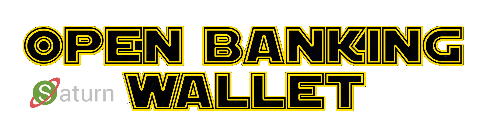

This repository holds links to the information resources required to fully describe the Open Banking Wallet.
Core Documents
Project Background
Saturn - Universal Wallet
Upgrading an Open Banking API Implementation
Video Clips
Payment Operations:
https://vimeo.com/373153287
Technology Overview:
https://vimeo.com/374588892
Enrollment:
https://vimeo.com/374590495
Implementations
For folks with interests in running code, the following proof-of-concept implementation may be of interest:
https://github.com/cyberphone/swedbank-psd2-saturn
Under Development
Person-to-person payments.
NFC/BLE interface for physical world payments, currently only possible to perform via QR code.
Digital receipts.
Version 0.11, 2019-12-15